The purpose of this document is to provide a "quick" introduction to the fundamental objects in oomph-lib. Assuming that you
- have a basic understanding of the finite element method
and
- are reasonably familiar with object-oriented programming in C++,
the Quick Guide should enable you to solve basic PDE problems using oomph-lib. You should also consult the extensive list of example codes distributed with the library.
How to solve simple PDEs with oomph-lib
To solve a given PDE with oomph-lib, its discretisation needs to be specified in a Problem object. This usually involves the specification of the Mesh and the element types, followed by the application of the boundary conditions. If these steps are performed in the Problem constructor, the driver code itself can be as simple as:
The amount of work required to represent a given PDE as a Problem object is problem-dependent:
- If
oomph-lib'sexistingMeshobjects and element types are sufficient to discretise the problem, the generation of a fully-functionalProblemobject is straightforward. We shall discuss this case in the section How to build a Problem. - If
oomph-libprovides the required element type but none of the available meshes are suitable, you will have to write your ownMeshobject. We shall discuss this in the section How to build a Mesh. It is also possible to createoomph-libmeshes based on the output from third-party (commercial) mesh generators. This is illustrated in another example. - Finally, the problem might involve a PDE for which
oomph-libdoes not provide any suitable elements. In this case you will need to write your own element. When implementing elements inoomph-libthe element formulation is generally sub-divided into (at least) two levels. Geometric elements implement the element geometry (e.g. 2D quad elements, 3D brick elements, etc); these geometric elements act as base classes for specificFiniteElementsthat implement the discretisation of particular PDEs. We discuss the implementation of the two types of elements in two separate sections:- In the section How to implement a new system of equations as a specific FiniteElement we describe how to discretise a new system of equations, using existing geometric elements.
- In the section How to build a new geometric element we discuss how to formulate new geometric elements.
In all cases, we start with a brief description of the minimum functionality that must be implemented for the various objects. The general principles are then illustrated by considering the discretisation of the model problem
Solve 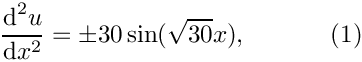 in the one-dimensional domain 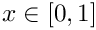, subject to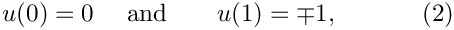 |
by isoparametric two-node elements. (Please consult the Introduction for a review of the relevant finite element theory.) The source code for this example (one_d_poisson_generic_only.cc) is self-contained and uses only objects from the "generic" part of the oomph-lib library. [oomph-lib does, of course, provide 1D meshes and Poisson elements but we deliberately ignore these because we wish to illustrate how to build such objects from scratch. The alternative example code one_d_poisson.cc, discussed in another example illustrates the implementation of the same problem using existing library objects.]
The main purpose of this document is to provide a "quick" introduction to oomph-lib's fundamental objects, so the example classes presented below are fully-functional but very basic. We provide exercises at the end of each section to allow the reader to explore various straightforward improvements, most of which are implemented in the corresponding objects in the library. Finally, the section Further comments provides a discussion of some general design principles that should be respected when creating new classes for use with the library.
How to build a Problem
All specific Problems should be implemented as objects that inherit from the generic Problem class. These specific Problem objects will vary considerably depending on the exact details of the problem being solved.
Only a few member functions must be implemented for each specific Problem class:
- The problem constructorSomeSpecificProblem(...)
- and the member functions Problem::actions_before_newton_solve()Problem::actions_after_newton_solve()
The constructor: SomeSpecificProblem(...)
The Problem constructor SomeSpecificProblem(...) usually contains the following steps:
- Construction of the timestepper (if required), e.g. Problem::add_time_stepper_pt(new SomeTimeStepper());
- Construction of the
Mesh(which may involve passing a particular element type as a template parameter), e.g.Problem::mesh_pt() = new SomeMesh<SomeElement>(...); - Specification of the boundary conditions. By default, all nodal values are assumed to be free and their values are initialised to zero. Therefore, we only need to "pin" the values that are prescribed by boundary conditions and assign any nonzero boundary values. For instance, the following instruction "pins" the (single) nodal value at node "0": A non-zero boundary value can be set byProblem::mesh_pt()->node_pt(0)->pin(0);This statement sets the first (= zero-th in C++'s zero-based indexing) nodal value to 1.0.Problem::mesh_pt()->node_pt(0)->set_value(0,1.0);
- Completion of the build of the elements: Elements are typically constructed during the mesh generation process. To allow a generic implementation of this process, mesh constructors use an argument-free constructor to create the elements. Thus, element constructors must not have any arguments. (See the section ‘new_mesh’, below, for an illustration of this process.) If an element requires any global parameters (such as pointers to physical parameters, function pointers to source functions, etc.), these parameters should be passed to the element via suitable access functions, after the element has been created by the mesh constructor.
- Assignment of the global and local equation numbers Problem::assign_eqn_numbers();
The function Problem::actions_before_newton_solve()
oomph-lib treats all problems as non-linear problems and employs Newton's method to solve the system of nonlinear algebraic equations that results from its spatial (and, in time-dependent problems, temporal) discretisation. Within this framework, linear problems are special cases for which Newton's method converges in one step.
The (pure virtual) member function Problem::actions_before_newton_solve() should contain everything that must be done before a nonlinear solve to complete the specification of the problem. For example, the function may contain a call to update the boundary conditions.
If desired, finer granularity may be obtained by overloading the empty virtual functions Problem::actions_before_newton_convergence_check(), Problem::actions_before_newton_step() and/or Problem::actions_before_implicit_timestep(), which are executed before each calculation of the maximum value of the residuals, each Newton step or each timestep, respectively. We refer to a separate document for a more detailed discussion of the various "action functions" executed by oomph-lib's Newton solver.
The function Problem::actions_after_newton_solve()
The (pure virtual) member function Problem::actions_after_newton_solve() should contain everything that is to take place after each nonlinear solve. For example, the function might contain commands to update the values of any "dependent" variables, or post-processing commands.
Again, the finer-grained member functions Problem::actions_after_newton_step() and
Problem::actions_after_implicit_timestep() are provided.
An example of a "complete" specific Problem
Here is the full specification for the DemoPoissonProblem class (taken from one_d_poisson_generic_only.cc) which implements the discretisation of the 1D Poisson problem described above, using a Mesh of type OneDimMesh, with elements of type TwoNodePoissonElements.
Exercises:
- Compile and run the example code one_d_poisson_generic_only.cc and compare the numerical results against the (fish-shaped) exact solution
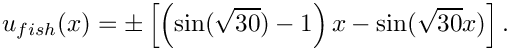
(The sign of the source function is an optional argument to the problem constructor. If no argument is specified, the + sign is used.) Modify theactions_after_newton_solve()function so that it writes the exact solution into another file, "exact_solution.dat", say. - Vary the number of elements and observe how the numerical results converge to the exact solution.
- Adjust the boundary conditions:
- Change the boundary condition at the left end of the domain to 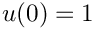.
- What happens when you don't apply a boundary condition at 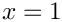? (Hint: What are the natural boundary conditions for the Poisson equation?)
- What happens when no boundary conditions are applied?
- Suppress the assignment of the equation numbers in the problem constructor and observe what happens. Check the error messages produced by
Problem::self_test().
How to build a Mesh
oomph-lib provides a large number of fully-functional Mesh objects. Many of these meshes can easily be adapted to discretise other domains, provided the domain has the same topology as the original Mesh. We shall illustrate this in section How to adapt an existing Mesh to a different domain shape below.
How to build a completely new Mesh
If the domain is too different from any of the existing meshes, a new, customised Mesh object, SpecificMesh, say, must be created. The specific mesh should be created as an object that inherits from the generic Mesh class. To maximise the potential for code-reuse, we recommended making the element type a template parameter of the SpecificMesh class.
This allows the SpecificMesh to be used with any FiniteElement that is based on the same geometric element type (see the section How to build a new geometric element for a more detailed discussion of geometric elements).
The minimum requirements for a specific mesh object are that it must:
- Construct the elements and the
Nodes, - Store pointers to the elements in the
Mesh::Element_ptvector, - Store pointers to the
Nodesin theMesh::Node_ptvector, - Set the elements' pointers to their local
Nodes - Set the positions of the
Nodes.
We suggest that all specific Mesh constructors also set up an auxiliary lookup scheme that stores information about the mesh boundaries. While this is not strictly required, it greatly facilitates the application of boundary conditions in complex domains. Firstly, the function Mesh::set_nboundary(...) must be called to specify the number of mesh boundaries. In addition, the generic Mesh class provides a function Mesh::add_boundary_node(i,node_pt), which adds the Node pointed to by node_pt to the Mesh's i-th boundary and constructs the required look-up schemes, including a reverse lookup scheme that informs all Nodes which mesh boundaries (if any) they are located on. (In our simple 1D example there are only two boundaries, each consisting of a single Node.) Although this step is optional, it is required during mesh adaptation – if the reverse lookup scheme has not been set up, a warning is issued and the code execution stops when any mesh adaptation is attempted. Implementation detail: Nodes that are located on mesh boundaries must be defined as BoundaryNodes.
The majority of the work required to build a specific Mesh takes place in its constructor. Typically, the constructor creates the elements (of the type specified by the template parameter ELEMENT) and uses the elements' member function FiniteElement::construct_node(...) to create the new Nodes. The equivalent member function FiniteElement::construct_boundary_node(...) is used to create new BoundaryNodes.
Here is the complete class definition for a simple, one-dimensional (line) mesh which discretises the 1D domain ![$x\in [0,1]$](form_6.png) using a specified number of equally-spaced elements.
using a specified number of equally-spaced elements.
To build a OneDimMesh with ten elements of type SomeElement, say, the Problem constructor would contain the following
How to adapt an existing Mesh to a different domain shape
Given that mesh generation tends to be a fairly tedious process, one should always check whether it is possible to deform an existing Mesh into a shape that matches the required domain. Provided that the new domain has the same topology as the domain represented by the original Mesh, this can always be done by re-positioning the Nodes. Such "deformed" Meshes should be implemented via inheritance, by deriving the new Mesh from an existing one.
Here is an example that illustrates the procedure. Assume we wish to solve an equation in the 2D annular domain bounded (in polar coordinates) by ![$ r \in [r_{min}, r_{max}] $](form_7.png) and 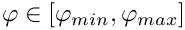. Inspection of the list of available meshes shows that
and 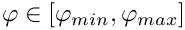. Inspection of the list of available meshes shows that oomph-lib does not provide a mesh for this geometry. However, there is a Mesh object, SimpleRectangularMesh, which provides a uniform discretisation of a 2D rectangular domain 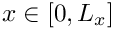 and 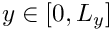 with 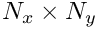 quadrilateral elements. Since the topology of the two domains is identical, the annular mesh can be implemented in a few lines of code:
Exercise:
Modify the OneDimMesh object so that it provides a piecewise uniform discretisation of the domain ![$ x \in [0,1]$](form_12.png) : 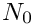 equally spaced elements are to be placed in the the region 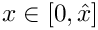, while 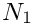 elements are to be placed in the the region 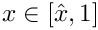. Pass the parameters 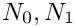 and 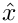 to the mesh constructor. Construct the modified mesh via inheritance from the basic
: 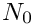 equally spaced elements are to be placed in the the region 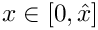, while 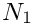 elements are to be placed in the the region 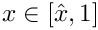. Pass the parameters 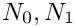 and 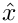 to the mesh constructor. Construct the modified mesh via inheritance from the basic OneDimMesh and include an error check to confirm that 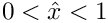.
How to build a FiniteElement
oomph-lib provides fully-functional FiniteElements for the discretisation of a wide range of PDEs. Most of the existing elements are constructed in a three-level hierarchy, the base being the generic FiniteElement class. The next level in the hierarchy contains geometric elements (e.g. 1D line elements, 2D quad or triangular elements, 3D brick elements, etc.). These geometric classes form the bases for elements that implement the discretisation of particular PDEs. This hierarchy maximises the potential for code-reuse, because it allows many different specific elements to be derived from the same geometric element.
We shall discuss the implementation of new element types in two sections:
- How to implement a new system of equations as a specific FiniteElement
- How to build a new geometric element
How to implement a new system of equations as a specific FiniteElement
Assume that we wish to design a new element type, SpecificElement, say, that implements the discretisation of a system of PDEs on an existing geometric element. The SpecificElement class needs to implement the following functions:
- The function that specifies the number of nodal values required at each of the element's nodes: FiniteElement::required_nvalue(n)
- The function that computes the element's residual vector: FiniteElement::get_residuals(residuals)
- The function that computes the element's Jacobian matrix and its residual vector: FiniteElement::get_jacobian(residuals,jacobian)
- The output function: FiniteElement::output(ostream)
Most specific finite element classes will contain further member functions and member data to provide additional, problem-specific functionality. As a concrete example, we consider the TwoNodePoissonElement, a specific FiniteElement that provides an isoparametric discretisation of the 1D Poisson equation (1), based on the geometric element TwoNodeGeometricElement, to be discussed below:
In addition to the FiniteElement member functions discussed above, this element provides a function that defines the source function  ,
,
where the sign of the source function is stored as private member data
and can be set by the access function
We provide a member function that returns the (single) nodal value stored at a specified local node in the element,
Finally, it is good practice to implement a self-test function that provides a sanity check of all data before the problem is solved. oomph-lib already provides self-test functions for all fundamental objects. Additional tests can be added by overloading these. For instance, in our Poisson element, the Sign variable should only take the values  . This can be tested with the following function, which also executes the
. This can be tested with the following function, which also executes the self_test() function of the underlying FiniteElement:
We will now discuss the implementation of the generic FiniteElement member functions for the specific TwoNodePoissonElement:
The function FiniteElement::required_nvalue(n)
The function returns the number of values that are stored at the element's n-th local node. In our scalar Poisson problem, each node stores one value:
The function is used by FiniteElement::construct_node(...) to determine the amount of storage to be allocated at each of the element's Nodes.
The function FiniteElement::get_residuals(residuals)
This function calculates the element's residual vector whose entries are labelled by the local equation numbers. (Consult the Introduction for a detailed discussion of the weak form of Poisson's equation and its finite element discretisation which produces the discrete residual implemented here.) The spatial integration over the element is performed by the (default) integration scheme specified in the underlying geometric element. Note that it should (must) not be assumed that the residuals vector has been set to zero before the function call.
The function FiniteElement::get_jacobian(residuals,jacobian)
This function calculates the element's Jacobian matrix and its residual vector, performing the spatial integration with the (default) integration scheme defined in the underlying geometric element. The entries in the Jacobian matrix and the residual vector are labelled by the local equation numbers. Note that neither the residuals vector nor the Jacobian matrix should be assumed to have been initialised to zero before the function call.
Note: There is a large amount of code duplication between the get_residuals() and get_jacobian() functions. To avoid this, we usually implement the computation of the residual vector and the Jacobian matrix in a single function containing the loop over the integration points. We then use a boolean flag as an additional argument to determine whether the Jacobian matrix should be assembled, e.g.
The function FiniteElement::output(out_stream)
The output function is used to print the nodal values over the element
Exercises:
- Implement the function
get_generic_residual_contribution(...)as a private member function of theTwoNodePoissonElement. Use the function to avoid the large amount of code duplication betweenget_residuals(...)andget_jacobian(...)by re-writing these functions as follows:and/// \short Calculate the elemental contributions to the residuals for/// the weak form of the Poisson equationvoid get_residuals(Vector<double> &residuals){// Set flag for not computing the Jacobianbool flag=false;// Dummy JacobianDenseMatrix<double> jacobian;// Compute the residuals only:get_generic_residual_contribution(residuals,jacobian,flag);}/// \short Calculate the elemental contribution to the Jacobian/// matrix dR_{i}/du_{j} used in the Newton methodvoid get_jacobian(Vector<double> &residuals, DenseMatrix<double> &jacobian){// Set flag for computing the Jacobian matrixbool flag=true;// Compute the residuals and the Jacobian matrix:get_generic_residual_contribution(residuals,jacobian,flag);} - The implementation of the specific source function
in TwoNodePoissonElement::f(...)makes it impossible to use theTwoNodePoissonElementto solve the Poisson equation with any other source functions, even though the discretisation of the ODE would otherwise be completely identical. A better implementation would allow the "user" to specify a different source function without having to change the implementation of the element class itself.
Here is a suggestion for an improved implementation, which illustrates the procedure employed in the existing elements inoomph-lib:- Introduce a public typedef into the element class to define the required format of the function pointer: /// \short Function pointer to source function:/// The source function returns the value of the/// source function at the global coordinate x.typedef double (*PoissonSourceFctPt)(const double& x);
- Add a function pointer to the private data of the
TwoNodePoissonElementclass and initialise it to NULL in the constructor:/// \short Function pointer to source function (initialised to/// NULL in the constructor)PoissonSourceFctPt Source_fct_pt; - Provide an access function for the source function pointer: /// \short Access function to pointer to source functionPoissonSourceFctPt& source_fct_pt() {return Source_fct_pt;}
- Re-write the
TwoNodePoissonElement::f(...)function, so that it evaluates the (global) function pointed to by the source function pointer. If possible, provide a default value for the case when the function pointer has not been set:/// Evaluate source function at Eulerian position x{//If no source function has been set, return zero//so that the Poisson equation defaults to a Laplace equation.double source=0.0;if(Source_fct_pt!=0){// Evaluate source functionsource = (*Source_fct_pt)(x);}return source;}
- Introduce a public typedef into the element class to define the required format of the function pointer:
- Generalise the
TwoNodePoissonElementto aTwoNodeSelfAdjointElementthat implements the isoparametric discretisation of the self-adjoint ODE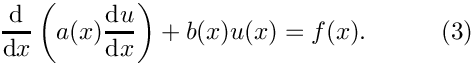
Use function pointers to allow the "user" to specify the coefficient functions 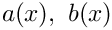 and.
How to build a new geometric element
Geometric elements define the geometry of a FiniteElement. They are usually implemented as distinct classes that can then be used to create a number of FiniteElements each discretising a specific PDE, but with the same underlying geometrical representation. For this purpose, each geometric FiniteElement must implement the following functions:
- The constructor must perform the following actions:SomeGeometricFiniteElement::SomeGeometricFiniteElement()
- Set the number of Nodes by calling the protected member function FiniteElement::set_n_node(n_node).
- Set the dimension of the element by calling the protected member functionHere the dimension of the element is defined as the number of local coordinates required to parametrise its shape. (Note that this is not necessarily the same as the spatial dimension of the problem – we can have one-dimensionalFiniteElement::set_dimension(dim)
FiniteElementsin 3D space, say.) - Optional: Set the spatial integration scheme by calling the protected member functionFiniteElement::set_integration_scheme(&integration_scheme)
- Optional: If the spatial dimension (= the number of Eulerian coordinates) required at all Nodes in the element is different from the spatial dimension of the element then set the "nodal dimension" by calling the protected member functionFor example in shell elements, a two-dimensional surface is embedded in a three-dimensional space, so the elemental dimension is two, but the nodal dimension is three.FiniteElement::set_nodal_dimension(dim)
- Optional: If the Eulerian coordinate (position) is interpolated using generalised coordinates, e.g. vector-valued shape functions, or Hermite-type interpolation, set the number of generalised coordinates or "position types" by using the protected member function FiniteElement::set_n_nodal_position_type(n_position_type)
- Set the number of Nodes by calling the protected member function
- The function that computes the element's (geometric) shape functions at specified values of the local coordinates. These shape functions are primarily used to implement the mapping between the element's local coordinates and the global (Eulerian) coordinates.
The geometric shape functions can be (and often are) also used in specificFiniteElementsto interpolate the unknown function(s) between the nodal values.FiniteElement::shape(s,psi)
It is usually necessary to implement the following additional functions:
- The function that computes the derivatives of the element's shape functions with respect to the local coordinates, FiniteElement::dshape_local(s,psi,dpsids)
- The function that specifies the number of Nodes along the element's 1D "edges"
FiniteElement::nnode_1d()
Further member functions and member data may be defined as and when required. For instance, all specific FiniteElements must store a pointer to an (instantiated) spatial integration scheme. It is good practice to provide a default integration scheme for each geometric element and to ensure its instantiation by making it a static data member of the geometric element class. This allows the constructor of the geometric element to set the pointer to the default integration scheme. If the default is not appropriate for a specific derived FiniteElement, the default assignment can be over-written in the constructor of the derived class.
As a concrete example, we consider the implementation of the one-dimensional, two-node geometric element, TwoNodeGeometricElement, that uses linear shape functions to define the mapping between the element's local and global coordinates. The element is derived from the FiniteElement base class,
and it uses a one-dimensional, two-point Gauss rule as the default spatial integration scheme
Here is the implementation of the generic FiniteElement member functions for our specific geometric FiniteElement:
The constructor: TwoNodeGeometricElement()
The constructor sets the number of local nodes in the element (2), sets the dimension of the element (1) and sets the pointer to the spatial integration scheme to be the default that is defined and instantiated as a static data member of the class:
The function FiniteElement::shape(s,psi)
This function returns the shape functions at the local element coordinate, s. The shape functions are used to interpolate the position, and also, any data values stored at nodes in derived, isoparametric elements.
The function FiniteElement::dshape_local(s,psi,dpsids)
This function returns the shape functions and their derivatives with respect to the local coordinates
The function FiniteElement::nnode_1d()
Return the number of nodes along the element's 1d "edge" – for a one-dimensional element, this is obviously the same as the number of nodes:
Exercises:
- Change the
TwoNodeGeometricElementto aThreeNodeGeometricElementin which quadratic interpolation is used to interpolate the Eulerian coordinates between the nodal points. Use this element as a basis for aThreeNodePoissonElementand convince yourself that changing theTwoNodePoissonElementto aThreeNodePoissonElementonly requires the change of a single line of code! - Use templating to generalise the geometric elements to an arbitrary number of nodes so that the class represents 1D line elements withtemplate <unsigned NNODE>class GeometricLineElement : public FiniteElement
NNODEnodes. Consider carefully which member functions you can implement in generality and which member functions require specialised implementations. Provide the specialised member functions for elements with two, three and four nodes. - Use the templated
GeometricLineElementsto implement an equivalent generalisation of theTwoNodePoissonElementandThreeNodePoissonElementclasses to the general classtemplate <unsigned NNODE>class PoissonLineElement : public GeometricLineElement<NNODE> - Validate all elements against the exact solution and confirm the theoretical error estimate which predicts that if the domain is discretised with 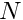 equally spaced
 -node line elements, we have
-node line elements, we have 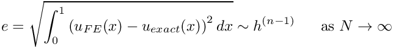
where 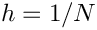.
Further comments
We reiterate that the main purpose of this document is to provide a quick introduction to oomph-lib's fundamental objects. The exercises have already highlighted several undesirable features of the simple example classes which could easily be improved to facilitate the (re-)use of the classes in different problems. Here we shall briefly discuss some further modifications that we regard as good practice, and which tend to be implemented in the existing classes in oomph-lib:
- Dimension-independent implementation
- Using pre-computed shape functions and the StorableShapeElement<ELEMENT> class
- Further sub-division of specific element classes – equation classes.
- Implement extensive (but optional) self tests in all classes
- The use of "magic numbers"
- Facilitating the use of specific elements in multi-physics problems
Dimension-independent implementation
The exercises in the section How to build a new geometric element suggest the use of templating to implement families of objects. This idea also permits the implementation of (geometric and specific) FiniteElements in arbitrary spatial dimensions. For instance, oomph-lib's QElement class represents the family of (line/quadrilateral/brick-shaped) geometric elements with an arbitrary number of nodes along the elements' 1D edges. Thus, a QElement<1,3> is a three-node 1D line element, a QElement<3,2> is an eight-node 3D brick element, etc.
These geometric elements naturally form the basis for corresponding specific elements, such as the QPoissonElement family which provides an isoparametric discretisation of the Poisson equation (in an arbitrary spatial dimension), based on the QElements with the same template parameters.
Using pre-computed shape functions and the StorableShapeElement<ELEMENT> class
The computation of the element's residual vector and the Jacobian matrix requires the evaluation of the element's shape functions, 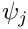, and their derivatives with respect to the global coordinate, 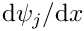, at the element's integration points. In our simple example class, TwoNodePoissonElement, we (re-)compute these functions "on the fly", using the function
where the local coordinate of the integration point is passed in the (one-dimensional) vector s.
The re-computation is wasteful because:
- The values of the shape functions and their derivatives, evaluated at the integration point, are independent of the value of the
Signvariable. Their re-computation during the second solve could therefore be avoided if we stored their values in a suitable container. - The values of the shape functions at the integration points are identical for all elements. Therefore we only need to provide storage for the shape function values in a single, representative element. The other elements can access the values via pointers.
To circumvent these potential inefficiencies, oomph-lib provides alternative interfaces for various functions that compute shape functions and their derivatives:
- Calls to the function which computes the shape function at a given local coordinate,FiniteElement::shape(s,psi)
s, can be replaced bywhere theFiniteElement::shape_at_knot(int_point,psi)unsignedargumentint_pointidentifies the integration point (as specified by the element's spatial integration scheme). In "standard"FiniteElementsthe functionFiniteElement::shape_at_knot(...)simply determines the position of the integration point and callsFiniteElement::shape(...)and so the shape functions are still computed "on the fly". The templated classStorableShapeElement<ELEMENT>, however, may be used to upgrade any class derived fromFiniteElementinto a class that can store the values of the shape functions and their derivatives at the integration points. The functionshape_at_knot(...)is overloaded so that when called for the first time, it computes the values of the shape function at all integration points and stores them for future reference. In subsequent calls, the function returns the stored values, rather than re-computing them. - There are equivalent alternatives for the functions that compute the shape functions and their derivatives with respect to the local coordinates: can be replaced byFiniteElement::dshape(s,psi,dpsids)whileFiniteElement::dshape_at_knot(int_point,psi,dpsids)can be replaced byFiniteElement::d2shape(s,psi,dpsids,d2psids)FiniteElement::d2shape_at_knot(int_point,psi,dpsids,d2psids)
These functions are all overloaded in the StorableShapeElement<ELEMENT> class and by default the overloaded functions store the pre-computed values of the shape functions and their derivatives locally within each element. This implementation ensures data locality and should increase the speed of access to the stored values. However, it can also create significant storage overheads. oomph-lib therefore provides the function
which frees up the storage in the element and replaces it by pointer-based access to the values stored in another element. Typically, all elements in a mesh are of the same type and use the same spatial integration scheme and so the values of the shape functions need only be stored in one element.
Derivatives of the element's shape functions with respect to the global Eulerian coordinates are generally computed by
and
These functions also return the Jacobian of the mapping between the local and global coordinates – the Jacobian can also be computed independently from
The derivatives of the shape functions with respect the global coordinates depend on the nodal positions, and it is not safe to assume that they will remain constant. For instance in moving boundary problems, the position of the nodes is determined as part of the solution. By default, the functions
and
re-compute the derivatives at the specified integration point "on the fly". If the "user" is confident that in his/her problem, the nodal positions will not change, the values can be pre-computed by calling
Once these functions have been called, any subsequent calls to the *_eulerian_at_knot(...) functions return the stored values. To revert to the case in which the derivatives are re-computed "on the fly", the storage for the derivatives must be deleted by
calling
Notes:
- In the (unlikely!) case that an element's spatial integration scheme is changed during the code execution, all stored values are automatically re-computed.
- The class
StorableShapeSolidElement<ELEMENT>provides equivalent overloaded functions for derivatives with respect to the element's Lagrangian coordinates that are used in solid mechanics problems.
Further sub-division of specific element classes – equation classes.
We suggested that any newly developed elements should be constructed in a three-level hierarchy, FiniteElement – Geometric Element – Specific FiniteElement. Most finite elements in oomph-lib incorporate an additional intermediate "equation class" which implements the computation of the element residual vector and the element Jacobian matrix in terms of abstract shape and test functions, defined as pure virtual functions in the "equation class". This makes it easy to change the specific element formulation, without having to re-implement the weak form of the governing equation.
Note that different element types may store the same physical variable at different locations. For example, the pressure in the Navier–Stokes equations may be stored as internal Data (discontinuous) or nodal Data (continuous). Particular equation classes may require internal numbering schemes that store the appropriate local equation numbers for each physical variable. These schemes must be assembled for each specific element in the function GeneralisedElement::assign_additional_local_eqn_numbers(), which is called from within Problem::assign_eqn_numbers().
As an example, consider the weak form of the 2D advection diffusion equation
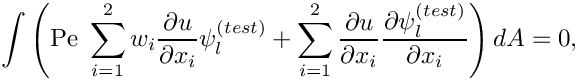
where the Peclet number, 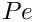 , and the "wind" 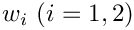 are given. We expand the unknown function 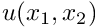 in terms of the (global) basis functions 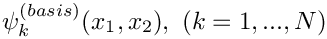,
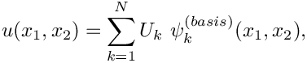
where  is the total number of nodes in the mesh. The mapping between the element's local and global coordinates is represented in terms of the local shape functions 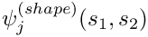 as
is the total number of nodes in the mesh. The mapping between the element's local and global coordinates is represented in terms of the local shape functions 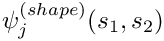 as
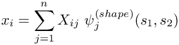
where  is the number of nodes in the element.
is the number of nodes in the element.
The following sketch illustrates how this discretisation is implemented in oomph-lib's QAdvectionDiffusionElement – an isoparametric, quadrilateral element, based on the Galerkin discretisation of the weak form with 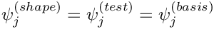

At large Peclet number, the Galerkin discretisation of the advection diffusion equation is well-known to produce spurious "wiggles" in the solution. These can be suppressed by SUPG stabilisation which employs test functions, 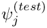, that differ from the basis function, 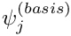,
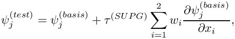
where 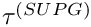 is a stabilisation parameter. This can be implemented with a trivial change to the QAdvectionDiffusionElement class – the QSUPGAdvectionDiffusionElement simply provides a different implementation of the test functions.
Implement extensive (but optional) self tests in all classes
We have already illustrated the use of oomph-lib's generic self_test() functions. The top-level Problem::self_test() function performs a systematic test of all fundamental objects involved in a specific problem and can be used to diagnose any problems. It is good practise to implement further self_test() functions in any newly developed classes. The generic self_test() functions are defined to be virtual functions in oomph-lib's fundamental objects and can be overloaded. Obviously, the self_test() function in a specific derived object should still call the self_test() function of the underlying fundamental object. The TwoNodePoissonElement::self_test() function, listed in in the section How to implement a new system of equations as a specific FiniteElement illustrates the procedure.
While frequent sanity checks are helpful during code-development, they can introduce significant overheads into the code execution. oomph-lib therefore provides a compiler flag PARANOID, which allows the execution of sanity checks to be switched on or off. When developing new classes, sanity checks should be implemented to catch any potential problems, but the relevant code should be surrounded by ifdef/endif statements to allow the tests to be disabled. Here is an example:
Note that we throw a specific OomphLibError object after catching the error – this allows the provision of more explicit (and hopefully more meaningful) error messages.
Many access functions that provide indexed access to a private container, do, in fact, access a private STL vector. Explicit range checking for these (frequent!) cases can be avoided by changing the container to oomph-lib's Vector class. The Vector class performs automatic range checking, if oomph-lib's generic library is compiled with the RANGE_CHECKING flag set (i.e. if -DRANGE_CHECKING is specified as a compilation flag for the C++ compiler). For access functions that do not use the Vector class you should implement your own range checks using the RANGE_CHECKING compiler flag.
The use of "magic numbers"
In general, we set the equation number to -1 to indicate that a nodal value is pinned, i.e. prescribed by boundary conditions. This convention is used throughout oomph-lib, but the direct use of -1 as a (bad!) "magic number" is generally avoided. Instead we refer to the static data member of the Data class
which is (of course) set to -1. Similarly, when nodes are created, the equation numbers of their value(s) are initialised to a value of -10, represented by the static data member
This allows the function Problem::self_test() to check if any values have not been classified as pinned or free.
Facilitating the use of specific elements in multi-physics problems
As the name of the library suggests, oomph-lib's existing "single-physics" elements are (and any newly designed ones should be) designed so that they can easily be used in multi-physics problems. We anticipate two types of multi-physics interactions:
- The solution of one system of equations affects the geometry of the domain in which another equation is solved – this occurs, for instance, in fluid-structure interaction problems.
- Two physical phenomena occur in the same domain and interact with each other, so that forcing terms in one equation depend on the solution of another – this occurs, for instance, in thermo-elasticity problems where the temperature distribution (determined by the solution of an unsteady heat equation, say) affects the "growth term" in the equations of elasticity.
Multi-physics elements for such problems are usually implemented by combining two (or more) single-physics elements via multiple inheritance. The combined, multi-physics element will obviously have a larger number of degrees of freedom than the constituent single-physics elements. The combined element typically calls the get_residuals(...) function of the two constituent elements and concatenates their residual vectors. When computing the Jacobian matrix, the "single physics" elements provide the diagonal blocks for the Jacobian matrix of the multi-physics element, while the off-diagonal interaction blocks must be computed separately. The details of the implementation vary from problem to problem. However, any single-physics element must satisfy the following requirements if it is to be used as a base class for derived multi-physics elements:
- Rule 1: Elements must only initialise their own entries in the element residual vector and the element Jacobian matrix
- Rule 2: Forcing functions, etc. should be implemented as uniquely-named virtual functions
- Rule 3: Nodal values should only be accessed indirectly via index functions that can be overloaded in derived multi-physics elements
- Rule 4: Time derivatives should be implemented in the ALE formulation to allow for moving meshes.
Rule 1: Elements must only initialise their own entries in the element residual vector and the element Jacobian matrix
The computation of the element residual vector and the element Jacobian matrix typically involves a loop over the element's integration points, in which each integration point adds a further contribution to the entries. In multi-physics problems it is crucial that the initialisation of the residual vector and the Jacobian matrix only sets the element's "own" entries to zero.
To illustrate this point, consider what would happen if we used the TwoNodePoissonElement::get_jacobian(...) function, discussed in the section The function FiniteElement::get_jacobian(residuals,jacobian), in a derived multi-physics element, which combines the TwoNodePoissonElement with another element, TwoNodeSomeOtherEquationElement, say. Assume that we implement the function get_jacobian(...) of the combined element so that it first calls the function TwoNodeSomeOtherEquationElement::get_jacobian(...) to determine the first diagonal block in the combined Jacobian matrix. When we call TwoNodePoissonElement::get_jacobian(...) to compute the entries in the second diagonal block, the initialisation loop
would initialise the entire Jacobian matrix, thus wiping out the entries that were already computed by
TwoNodeSomeOtherEquationElement::get_jacobian(...).
The strategy used in oomph-lib to permit the easy combination of elements is to use the two protected member functions of the GeneralisedElement class:
and
These functions DO NOT initialise the entries of the residuals vector or the Jacobian matrix. Instead, the functions merely add the appropriate contributions to the vector and the matrix entries. The default version of the get_residuals() and get_jacobian() functions, defined in GeneralisedElement, are simple wrappers that initialise the residuals and Jacobian to zero and then call the appropriate fill_in_contribution... function.
The get_residuals function, for example, can thus be overloaded in a multi-physics element, as follows:
It is, therefore, recommended that authors of "single-physics" elements, overload fill_in_contribution_to_residuals(...) and fill_in_contribution_to_jacobian(...), rather than get_residuals() and get_jacobian(...), respectively. A further advantage of the implementation is that the author need not worry about initialisation of the residuals vector or the Jacobian matrix when using the "fill_in_" rather than the "get_" functions.
Rule 2: Forcing functions, etc. should be implemented as uniquely-named virtual functions
To allow for an interaction between multiple equations, any forcing functions (such as the source function in the Poisson equation) should be implemented as virtual functions. This allows them to be overloaded in derived, multi-physics elements where the forcing function in one equation might depend on the unknowns in another one.
Furthermore, to avoid clashes of function names that may occur when two single-physics elements are combined, member functions that can be expected to have counterparts in the context of other equations should be given suitable modifiers. For instance,
is a better name for a member function that returns the source function in the advection-diffusion equations than
since many other equations are likely to have source functions, too. It is obviously impossible to completely avoid such clashes but this strategy makes them less likely to occur. We are fairly confident that the relevant member functions of all existing elements in oomph-lib have been given suitable modifiers to avoid clashes of this type. Therefore, you should be able to combine any element with any other element in the library. If you find a counter-example let us know, and we will rectify this in the next release. In the meantime exploit the fact that oomph-lib is an open source library; you can change anything you want!
Rule 3: Nodal values should only be accessed indirectly via index functions that can be overloaded in derived multi-physics elements
When implementing the single-physics TwoNodePoissonElement, discussed above, we provided an access function u(n) that returns the (single) nodal value, stored at the element's n -th Node. The function was implemented as a simple wrapper that followed the pointer to the element's n -th Node and returned the zero-th nodal value stored at that Node:
In a single-physics context, this implementation is perfectly acceptable since we know a priori that in a scalar problem each Node only stores a single value.
The same logic suggests that a TwoNodeAdvectionDiffusionElement would have a member function
However, merging these two elements via multiple inheritance creates two problems. First we have clash of names which could have been avoided by following rule 2 above and calling the two functions TwoNodePoissonElement::u_poisson(...) and TwoNodeAdvectionDiffusionElement::u_adv_diff(...), say. More serious is that both elements regard the zero-th nodal value as "their own". This can (and should!) be avoided by the following re-implementation:
where the virtual function u_index_poisson() provides the default index at which the Poisson nodal values are stored in a single-physics context:
The advection-diffusion element can be modified in the same way:
with
In a combined multi-physics problem, we can now merge the two elements by multiple inheritance,
Name clashes are already avoided, so we only have to overwrite the two index functions to indicate which (scalar) value is stored as which nodal value:
and
Specific examples that illustrate the creation of (non-trivial) multi-physics elements by multiple inheritance are provided in the list of example codes.
Rule 4: Time derivatives should be implemented in the ALE formulation to allow for moving meshes.
In moving mesh problems, the time-derivative of a nodal value (approximated by the Node's TimeStepper) is not the same as the Eulerian time-derivative 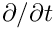 that "usually" occurs in the governing equation. The former represents the rate of change when following the moving node; the latter is the rate of change evaluated at a fixed Eulerian position. The two time-derivatives are related to each other via the ALE relation
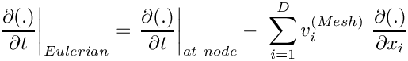
where  is the spatial dimension of the problem and 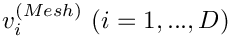 is the velocity of the node. Any Eulerian time-derivatives in the governing equation should be implemented in the above form to ensure that the element remains functional in moving mesh problems. See the example describing the solution of the unsteady heat equation in a moving domain for further details.
is the spatial dimension of the problem and 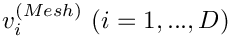 is the velocity of the node. Any Eulerian time-derivatives in the governing equation should be implemented in the above form to ensure that the element remains functional in moving mesh problems. See the example describing the solution of the unsteady heat equation in a moving domain for further details.
PDF file
A pdf version of this document is available.